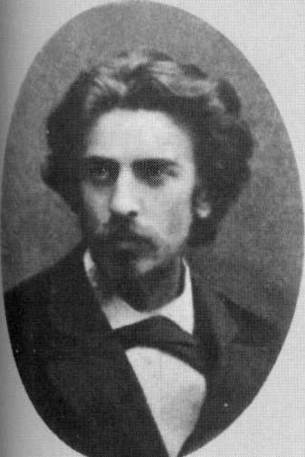

Соловьев создал оригинальную религиозную философию, которая оказала огромное влияние на философско-религиозные искания русской интеллигенции в XX веке. Многие идеи философа с трудом воспринимались его современниками, а часть научного наследия мыслителя до сих пор еще требует детального изучения. Ученый оставил огромное научное наследие. При анализе его публикаций «Философские начала цельного знания», «Кризис западной философии», «Критика отвлеченных начал», «Чтения о Богочеловечности» напрашивается вывод о том, что он был религиозным философом. По Владимиру Соловьеву, человек должен делать или делает «Божественную работу — или совместную богочеловеческую работу в истории». Он преклонялся перед платоновской природой красоты, истины и блага». Абсолютное хочет как блага того же самого, что оно представляет как истину и чувствует как красоту». После очищения и объединения человеческое делание, становится «цельным творчеством», знание, познавание становится «цельным знанием», а действительное, практика становится «цельным обществом». Любая из этих 3-х сфер, в свою очередь, является своеобразным синтезом 3-х подчиненных моментов: «цельное творчество» — мистики, изящного и технического творчества, «художества», «цельное знание» — теологии, абстрактной философии и положительной науки; «цельное общество» — церковных, государственных и хозяйственных институтов. Он называл «цельной жизнью» синтез цельных — общества, творчества и знания. Отличительной особенностью В. Соловьева является его отказ подчинить «действование», практику и «делание», созидание познаванию. Он ставил все три сферы на один уровень; равно трактуя их как существенные составные части «цельной жизни». По его мнению, следует, что противоречие между религиозными и светскими началами в человеческом обществе (они не могут ни отменить друг друга, ни сосуществовать как независимые сферы) — исчезает, когда мы понимаем, что светский или естественный порядок обеспечивает необходимые средства для достижения абсолютной цели религиозного или мистического порядка, а абсолютная цель может быть достигнута только с помощью этих средств. Светский порядок обладает реальной независимостью, но религиозному порядку присуще идеальное первенство, так как именно он обеспечивает содержание и цель светского порядка. Но поскольку для поддержания такого порядка необходимы формальные и материальные средства (то есть политические и экономические институты), религиозный порядок в свою очередь зависит от светского порядка. На философском диспуте в С.-Петербургском университете В. Соловьев сделал доклад «Несколько слов о настоящей задаче философии», где было отмечено, что философия и религия должны дополнять друг друга и быть в своеобразном соединении и в этом есть «настоящая задача философской мысли». По мнению философа этика, эстетика и философия истории, видимо, имеют столько же «содержания», сколько физика, химия, биология или геология, хотя это «содержание» совсем иного типа, а нравственный элемент «должен быть положен в основу теоретической философии». Свое философское творчество Владимир Соловьев связывал с позитивным этическим решением «быть или не быть правде на земле», а научная работа «Красота в природе» созвучна космически-преобразовательным идеям В. Вернадского, Н. Федорова, К. Циолковского. Созданная В. Соловьевым концепция «всеединства» была центром философских поисков мыслителя. Всеединство — идеальный абсолют. «Так как реализация всеединства еще не дана в нашей действительности, в мире человека и природы, а только совершается и при этом совершается посредством нас самих, то она является задачей для человечества». Постигнуть безусловное всеединство возможно только «цельным знанием». Имеется в виду синтез религии, науки и искусства. Концепция всеединства в наши дни является методологической проосновой эколого-экономического знания, построенного на принципах цельного (целостного) мировоззрения. Религиозный философ всю свою короткую жизнь соблюдал правило: вести этически правильную жизнь и «сохранять духовную трезвость и ясность сознания». По мнению философа Г. Флоровского, Владимир Соловьев умел будить умственную совесть. Он был за то, что «нам надо молиться Богу, помогать друг другу… Молитва, милостыня и пост, в этих трех действиях состоит вся личная или частная религия», но есть еще «религия общественная: участие в жизни церкви. Христос присущ своей церкви, как путь, истина и жизнь». Из них «образуется царство Божие, которого владыка — есть Христос». На образе Христа надо проверять свою совесть или этическую сторону жизни человека. В книге «Духовные основы жизни» философ дал читателям совет «…перед тем, как решиться на какой-нибудь поступок, необходимо вспомнить «нравственный образ Христа, сосредоточиться в нем и спросить себя: мог ли бы он совершить этот поступок…вспомните о Христе, вообразите Его себе живым, каким Он и есть и возложите на него все бремя ваших сомнений» 1. В.С. Соловьева интересовали и проблемы хозяйственного природопользования. Дело в том, что конец 80-х годов XIX века принес в Россию засуху, неурожай, голод. Он писал об иссушении и истощении земель в результате хищнического и неумелого землепользования, а человек является беспомощным в противостоянии стихиям. По мнению ученого, в истории существует три этапа подхода человека к природе. Первый этап, который пройден — это насильственное изъятие у природы всего насущно необходимого. Второй этап, к которому переходит человек — разумное изъятие «с оглядкой», но также насильственное, и третий этап, может быть, отдаленного будущего — полное прекращение насилия над природой. «Возделывать землю не значит злоупотреблять ею, не разрушать ее, а улучшать ее, вводить ее в большую силу и полноту бытья… Без любви к природе для нее самой нельзя осуществить нравственную организацию материальной жизни… Человек пользовался своим превосходством над природой не для своего только, но и для ее собственного возвышения. Отношение к собственному дому… должно строиться на нравственной основе, на основе определенной философии экологии, научного изучения целостности мироздания мира, как органического и разумного целого», а «человечество не может жить сиюминутными заботами, без ясной цели впереди». Так мог говорить человек, который имел этически чистую душу и в его действиях и многочисленных трудах подтверждается глубокая нравственность великого религиозного философа. В многочисленных воспоминаниях В. Соловьев характеризуется как выдающийся религиозный философ, оказавший огромное влияние на богоискательство и религиозную философию С. Булгакова, братьев С. и Е. Трубецких, П.А. Флоренского, Н. Бердяева и др. По К. Леонтьеву, философ Соловьев был непонятным мыслителем, а затем ясным философом — писателем в современной Европе. О. Ключевский считал, что философ был готов «проповедовать в пустыне». Религиозная философия В.С. Соловьева получила мировое признание, а многие его суждения остаются актуальными и в наши дни.
